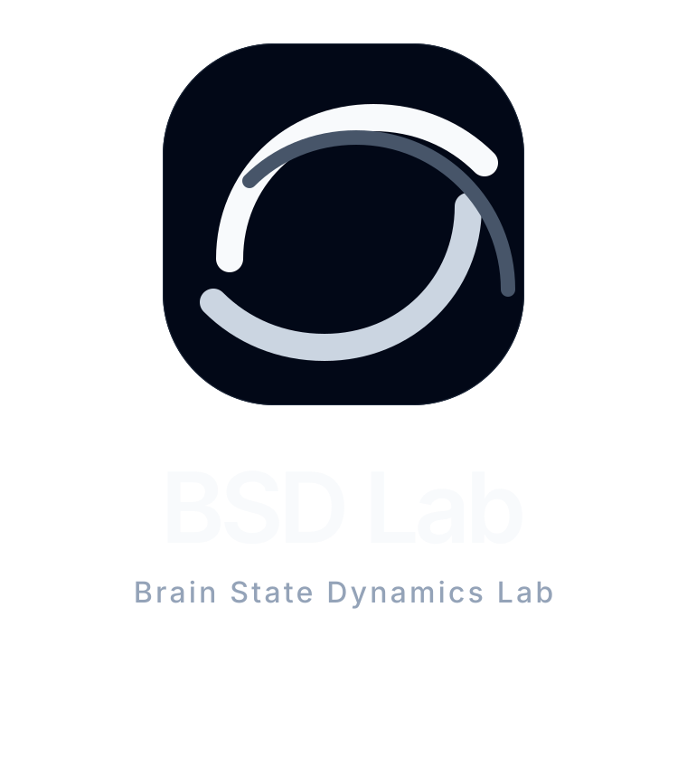

BSD Lab Identity Preview
Revised toward a shadcn-like visual language: flatter surfaces, monochrome hierarchy, no orbit dots, and a cleaner continuous trajectory motif for brain-state flow and closed-loop control.
Dark Surface
Primary Horizontal Lockup
Horizontal Lockup / Dark
Stacked Lockup
Stacked / Dark

Favicon Scale Check
24px
32px
48px
128px